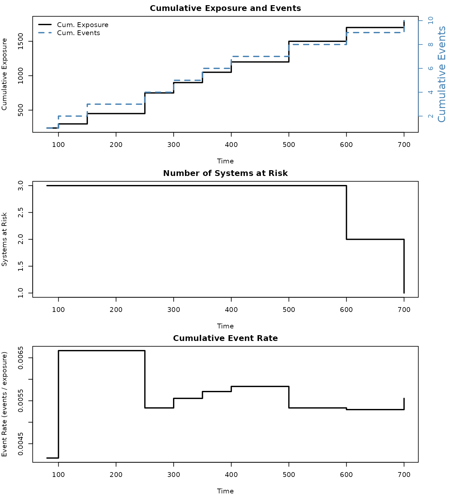
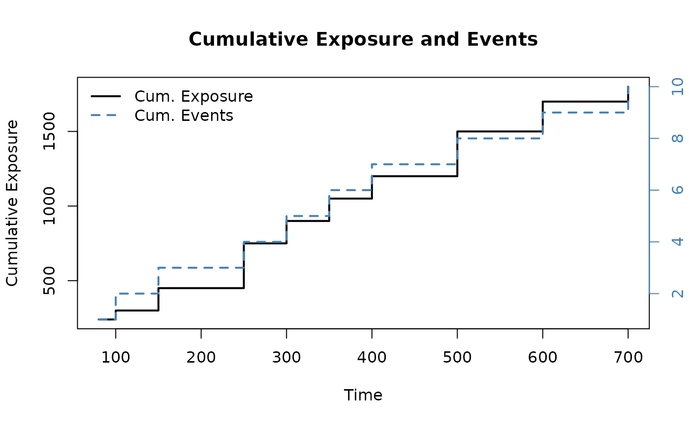
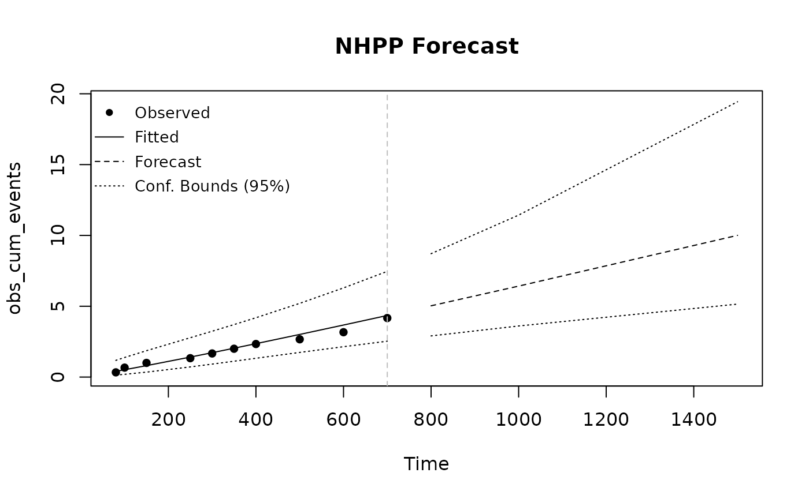

Introduction
Repairable systems are systems that can be restored to a functioning state after a failure. Unlike non-repairable items where we model time-to-first-failure, repairable systems generate recurrent events – a sequence of failure times over the system’s life. The Non-Homogeneous Poisson Process (NHPP) provides a natural framework for modeling these recurrence patterns.
ReliaGrowR provides four key tools for analyzing repairable systems:
-
mcf()– Non-parametric Mean Cumulative Function estimation -
exposure()– Exposure analysis (total operating time at risk) -
nhpp()– Parametric NHPP model fitting (Power Law and Log-Linear) -
predict_nhpp()– Forecasting future events from a fitted model
Mean Cumulative Function
The Mean Cumulative Function (MCF) is a non-parametric estimate of the expected cumulative number of events per system over time. It makes no assumptions about the underlying process and is useful as an exploratory tool before fitting parametric models.
For a fleet of systems, the MCF at time is estimated using the Nelson-Aalen estimator:
where is the number of events at time and is the number of systems still under observation.
Example
Consider three systems with the following event histories:
library(ReliaGrowR)
id <- c(1, 1, 1, 2, 2, 2, 3, 3, 3, 3)
time <- c(100, 350, 500, 80, 300, 600, 150, 250, 400, 700)Compute and plot the MCF:
result <- mcf(id, time)
plot(result, main = "Mean Cumulative Function",
xlab = "Time", ylab = "MCF")The step-function plot shows the estimated average cumulative events per system over time, with dashed confidence bounds.
Using Data Frames
The mcf() function also accepts a data frame:
df <- data.frame(id = id, time = time)
result2 <- mcf(data = df)Censored Observations
If some systems are withdrawn from observation before the end of the
study, use the event indicator (1 = event, 0 =
censored):
id <- c(1, 1, 1, 2, 2, 2, 3, 3, 3)
time <- c(100, 350, 500, 80, 300, 400, 150, 250, 700)
event <- c( 1, 1, 0, 1, 1, 0, 1, 1, 1)
result <- mcf(id, time, event)System 1 was censored at time 500 and System 2 at time 400. The MCF accounts for the reduced number of systems at risk after these times.
Exposure-Adjusted MCF
When systems are observed beyond their last event time (i.e., the system was running but no event occurred), it is important to specify the actual end-of-observation time. Otherwise, the MCF assumes a system left observation at its last event, which inflates the estimated recurrence rate.
The end_time parameter specifies the actual observation
window per system:
id <- c(1, 1, 2, 2, 3, 3)
time <- c(100, 300, 150, 400, 200, 350)
# Without end_time: system observation ends at last event
mcf_basic <- mcf(id, time)
# With end_time: all systems observed until time 800
mcf_adj <- mcf(id, time, end_time = c("1" = 800, "2" = 800, "3" = 800))Compare the two MCF estimates:
par(mfrow = c(1, 2))
plot(mcf_basic, main = "MCF (inferred exposure)",
xlab = "Time", ylab = "MCF")
plot(mcf_adj, main = "MCF (explicit exposure)",
xlab = "Time", ylab = "MCF")The exposure-adjusted MCF produces lower estimates because all three systems remain in the risk set for the full observation period – even at times beyond their last event.
Using Exposure Results with MCF
The exposure() function returns per-system
end-of-observation times in its end_times field, which can
be passed directly to mcf():
id <- c(1, 1, 1, 2, 2, 2, 3, 3, 3)
time <- c(100, 350, 500, 80, 300, 400, 150, 250, 700)
event <- c( 1, 1, 0, 1, 1, 0, 1, 1, 1)
exp_result <- exposure(id, time, event)
mcf_result <- mcf(id, time, event, end_time = exp_result$end_times)This workflow ensures the MCF and exposure calculations use the same observation windows.
Exposure Analysis
Exposure measures the total operating time during which events can occur across all systems in a fleet. It is fundamental to repairable systems analysis because event rates are only meaningful when normalized by the time during which events could have been observed.
For systems observed up to times , the total exposure is:
The cumulative exposure at time is:
Each system contributes time up to the lesser of or its observation end. The event rate is then , the cumulative number of events per unit exposure.
Example
Using the same three-system fleet from the MCF example:
id <- c(1, 1, 1, 2, 2, 2, 3, 3, 3, 3)
time <- c(100, 350, 500, 80, 300, 600, 150, 250, 400, 700)
result <- exposure(id, time)The exposure() function returns a table showing, at each
event time, the number of systems at risk, cumulative exposure,
cumulative events, and the event rate.
Multi-Panel Plot
The default plot method produces a three-panel dashboard:
plot(result)
The top panel shows cumulative exposure (left axis) and cumulative events (right axis, blue). The middle panel tracks the number of systems under observation. The bottom panel shows the cumulative event rate (events per unit exposure).
Single Panel Plots
Individual panels can be selected with the which
argument:
plot(result, which = "exposure")
plot(result, which = "event_rate")Exposure with Censoring
When systems are withdrawn before the end of study, their observation time still contributes to exposure up to the censoring point:
id <- c(1, 1, 1, 2, 2, 2, 3, 3, 3)
time <- c(100, 350, 500, 80, 300, 400, 150, 250, 700)
event <- c( 1, 1, 0, 1, 1, 0, 1, 1, 1)
result <- exposure(id, time, event)System 1 (censored at 500) and System 2 (censored at 400) contribute exposure up to their respective censoring times, but only actual events are counted in the cumulative event tally.
Power Law NHPP
The Power Law NHPP models the expected cumulative number of events per system (the MCF) as:
The parameter indicates the trend:
- : deteriorating system (increasing event rate)
- : constant rate (Homogeneous Poisson Process)
- : improving system (decreasing event rate)
Example
The recommended workflow is to estimate the MCF non-parametrically
first, then pass the result directly to nhpp() for
parametric fitting. Using the three-system fleet from the MCF
section:
id <- c(1, 1, 1, 2, 2, 2, 3, 3, 3, 3)
time <- c(100, 350, 500, 80, 300, 600, 150, 250, 400, 700)
m <- mcf(id, time)Fit a Power Law NHPP to the MCF using Maximum Likelihood Estimation (default):
Fit using Least Squares:
fit_ls <- nhpp(m, method = "LS")Both methods estimate similar parameters. MLE is generally preferred for its statistical properties, while LS provides a simple regression-based approach and supports piecewise models.
Log-Linear NHPP
The Log-Linear NHPP models the event intensity as:
with cumulative function:
The parameter controls the trend: means an increasing rate, a decreasing rate, and a constant rate.
Segmented NHPP
The Piecewise Power Law NHPP allows different parameters in different time segments. This is useful when a system’s behavior changes – for example, after a major overhaul or design change.
With User-Specified Breakpoints
Estimate the MCF from a fleet with a visible change point around time 350, then fit a piecewise model:
id2 <- c(1,1,1,1,1, 2,2,2,2,2, 3,3,3,3,3)
time2 <- c(100,200,300,400,500, 80,200,350,450,600, 150,250,400,550,700)
m2 <- mcf(id2, time2)
fit_pw <- nhpp(m2, breaks = c(350), method = "LS")
plot(fit_pw, main = "Piecewise Power Law NHPP",
xlab = "Time")The vertical dashed line indicates the change point at time 350. Each segment has its own and parameters.
Forecasting
The predict_nhpp() function forecasts cumulative events
at future times using a fitted NHPP model.
Example
Using fit_mle fitted to the MCF m from the
Power Law section:
fc <- predict_nhpp(fit_mle, time = c(800, 1000, 1500))
print(fc)
#> NHPP Forecast (Power Law)
#> --------------------------
#> Time Cum.Events Lower (95%) Upper (95%)
#> 800 5.0 2.9 8.7
#> 1000 6.4 3.6 11.4
#> 1500 10.0 5.1 19.4Plot the observed MCF with the fitted model and forecast:
plot(fc, main = "NHPP Forecast",
xlab = "Time")
The plot shows the observed MCF (points), the fitted model (solid line), and the forecast (dashed line) with confidence bounds. The vertical gray line marks the boundary between observed and forecast periods. The y-axis is on the MCF scale — expected cumulative events per system.
Forecasting also works with Log-Linear models:
fc_ll <- predict_nhpp(fit_ll, time = c(800, 1000))Summary
NHPP models provide a flexible framework for analyzing repairable systems:
- The MCF gives a non-parametric view of the
recurrence pattern, useful for exploratory analysis and comparing
systems. Pass a fitted
mcfobject directly tonhpp()to fit parametric models to the MCF curve — the recommended workflow for fleet data. - Exposure analysis quantifies the total time at risk and event rates, providing essential context for interpreting event counts.
- The Power Law NHPP is the most widely used parametric model, with directly indicating whether the system is improving or deteriorating.
- The Log-Linear NHPP offers an alternative parametric form for modeling time-dependent intensity.
- Piecewise models capture changes in system behavior across different operational phases.
-
Forecasting with
predict_nhpp()supports planning for spare parts, maintenance scheduling, and warranty analysis.